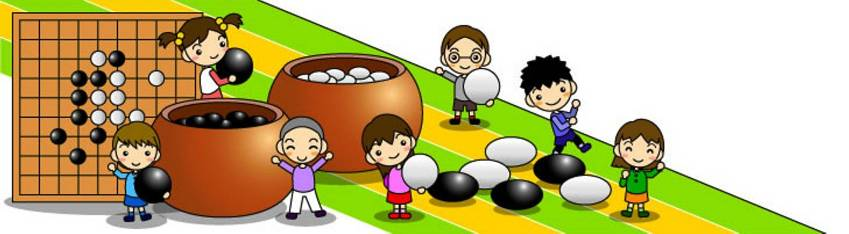
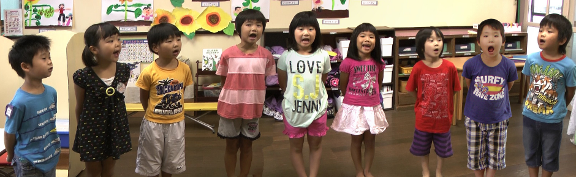

子どもから大人まで、自分のペースでじっくり楽しむ無学年の囲碁教室です。オンライン広場（Discord）なども活用し、全世代の考える力を育みます。
〜だれでも無料の対局場！〜

INGOは時差、言葉の壁を超えて囲碁を楽しむ場です。時間制限がなく、囲碁が好きな人なら子供から大人まで**無学年**でじっくり自分のペースで楽しむことができます！
〜Saibi塾の新しいメインの場所だよ！〜

**無学年（むがくねん）**でみんながあつまるオンラインのひろばです！声（こえ）やチャットでリアルタイムにお話しできるよ。毎日のざつだん、いごの待ち合わせ、先生とのレッスンなどにたくさん使っていきます！
黒と白を交互にクリックして対局や研究ができます。アタリになった石は自動的に消えます。
尾道市の市技である「囲碁」の保存・伝承や、地域の囲碁文化活動の推進・サポートを行っています。
秀策の偉業と生涯を展示、生家も再現。訪れるとプロ棋士も半目手が上がると謂われています。
因島囲碁協会のレディース囲碁教室・碁力養成囲碁教室・囲碁ROOM才美を開いている図書館です。
虎ちゃん囲碁まつり参加常連の「自・他を大切にし、心豊かに輝く子供の育成」を掲げる地元の小学校です。
地域に根ざし、５才児全員が「虎ちゃん囲碁まつり」目指し、子どもたちの豊かな育ちを支える認定こども園です。
因島で創業・起業を目指す方へワンストップ創業相談窓口
電動アシスト自転車で巡ろう！アップダウンの多い因島
生徒のみなさんがお使いのパソコンやスマホ・タブレットに合わせて、自由に選んで使うことができます。
【登録不要・スマホ対応・超軽量】
もっとも動作が軽く、バグが起きない安心の対局サイトです。小さな9路盤から本格的な19路盤まで、自分のレベルに合わせて手軽にAIと対局の練習ができます。
【登録不要・ブラウザ専用・KataGo搭載】
お手持ちのパソコンやスマホの画面上で、KaTrainのようにSGFファイル（棋譜）を読み込ませて本格的なAI検討ができるツールです。
※生徒のみなさんの端末（パソコンやスマホ）のパワーを使って計算するため、少し新しめの機種でのご利用をおすすめします。
【無料登録・スマホ対応・完全日本語（KataGo搭載）】
世界最強の囲碁AI「KataGo」が教えてくれる一番おすすめのサイトです。自分の打った棋譜をアップロードするだけで、AIが悪手や勝率を分かりやすくグラフで指摘してくれます。強力なサーバーが代わりに計算してくれるため、お手持ちのパソコンやスマホが重くなる心配もありません。
④ 棋譜再生・編集「棋院エディタ」 ➔https://cosumi.net
【Windowsパソコン専用・完全無料】
日本棋院が無償提供している安心の公式フリーソフトです。自分の打った棋譜をパソコンに記録・保存したり、プロ棋士の棋譜（SGFファイル）を読み込んで並べ直したり、綺麗に印刷したりできます。
🌐 For English Speakers
Go AI & Analysis: "AI Sensei" ➔
[Mobile Friendly / Free Sign-up]
Analyze your Go games with advanced KataGo AI natively in your browser. Upload your SGF files to review mistakes easily on any device.